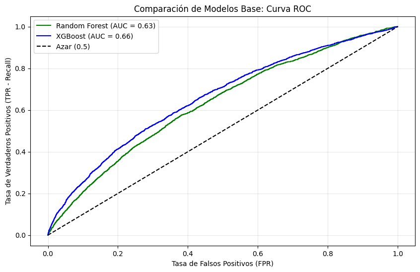
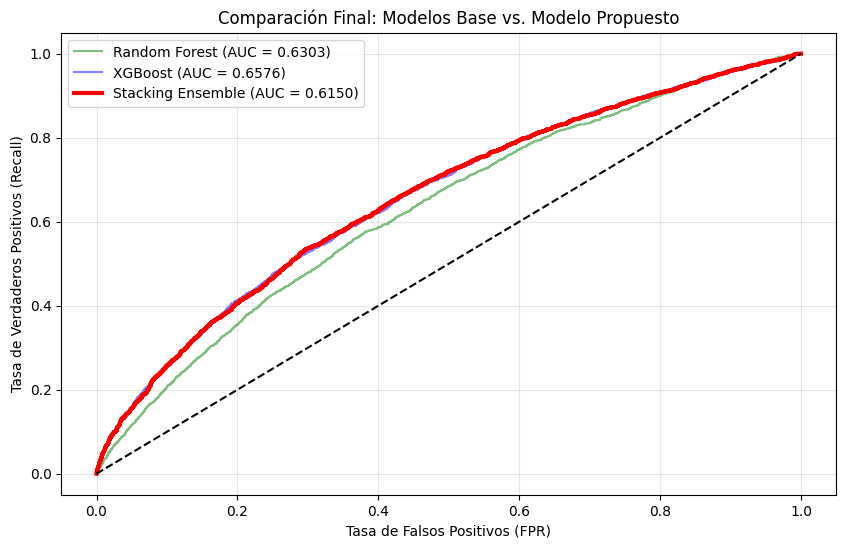
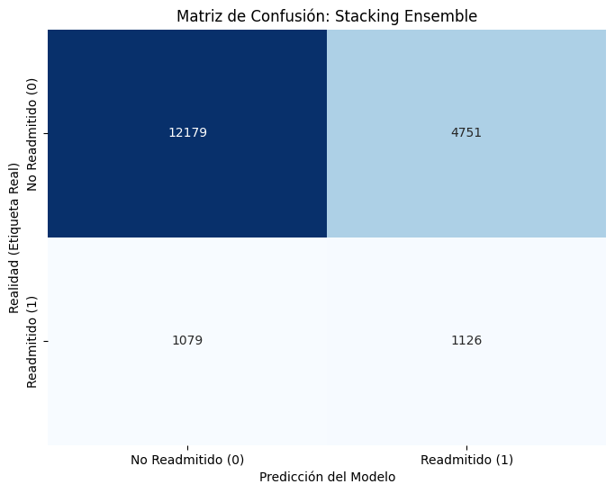

import pandas as pd
import numpy as np
from sklearn.model_selection import train_test_split
from sklearn.preprocessing import LabelEncoder, StandardScaler
import matplotlib.pyplot as plt
from sklearn.ensemble import RandomForestClassifier
from xgboost import XGBClassifier
from sklearn.metrics import classification_report, roc_auc_score, roc_curve, confusion_matrix, ConfusionMatrixDisplay
from sklearn.ensemble import StackingClassifier
from sklearn.linear_model import LogisticRegression
import seaborn as sns
from sklearn.metrics import f1_score
# 1. Carga de datos
df = pd.read_csv("../data/raw/diabetic_data.csv")
# ==========================================
# 2. Limpieza Inicial y Manejo de Nulos
# ==========================================
# Reemplazar '?' con NaN para detectarlos correctamente
df = df.replace('?', np.nan)
# Eliminar columnas con demasiados nulos (basado en literatura común de este dataset)
# 'weight' tiene ~97% nulos, 'payer_code' ~40%, 'medical_specialty' ~47%
cols_to_drop = ['weight', 'payer_code', 'medical_specialty']
df = df.drop(cols_to_drop, axis=1)
# Eliminar registros con nulos en variables críticas (o imputar si prefieres)
# Aquí optamos por eliminar filas con nulos en raza/genero/diagnóstico para mantener pureza
df = df.dropna(subset=['race', 'gender', 'diag_1', 'diag_2', 'diag_3'])
# Eliminar identificadores que no aportan predicción
df = df.drop(['encounter_id', 'patient_nbr'], axis=1)
# Eliminar visitas que terminaron en fallecimiento o hospicio (no pueden ser readmitidos)
# Discharge disposition ids: 11, 13, 14, 19, 20, 21 son relacionados a muerte o hospicio
df = df[~df['discharge_disposition_id'].isin([11, 13, 14, 19, 20, 21])]
# ==========================================
# 3. Feature Engineering (Ingeniería de Características)
# ==========================================
# A) Tratamiento de la variable objetivo (Target)
# Los papers suelen convertir esto a binario:
# <30 (Readmisión temprana) = 1
# >30 o NO (No readmisión temprana) = 0
df['target'] = df['readmitted'].apply(lambda x: 1 if x == '<30' else 0)
df = df.drop('readmitted', axis=1)
# B) Agrupación de Códigos de Diagnóstico (ICD-9)
# Los códigos ICD-9 son demasiados (700+). Es CRÍTICO agruparlos como hacen los papers (Circulatorio, Diabetes, Respiratorio, etc.)
def map_diagnosis(code):
try:
if pd.isna(code): return 'Other'
if 'V' in str(code) or 'E' in str(code): return 'Other'
code = float(code)
if 250 <= code < 251: return 'Diabetes'
elif 390 <= code < 460: return 'Circulatory'
elif 460 <= code < 520: return 'Respiratory'
elif 520 <= code < 580: return 'Digestive'
elif 800 <= code < 1000: return 'Injury'
elif 710 <= code < 740: return 'Musculoskeletal'
elif 580 <= code < 630: return 'Genitourinary'
elif 140 <= code < 240: return 'Neoplasms'
else: return 'Other'
except:
return 'Other'
for col in ['diag_1', 'diag_2', 'diag_3']:
df[col] = df[col].apply(map_diagnosis)
# C) Codificación de variables de medicación
# Los cambios en medicación son predictores fuertes (como vimos en Paper 3)
keys = ['metformin', 'repaglinide', 'nateglinide', 'chlorpropamide', 'glimepiride',
'acetohexamide', 'glipizide', 'glyburide', 'tolbutamide', 'pioglitazone',
'rosiglitazone', 'acarbose', 'miglitol', 'troglitazone', 'tolazamide',
'examide', 'citoglipton', 'insulin', 'glyburide-metformin', 'glipizide-metformin',
'glimepiride-pioglitazone', 'metformin-rosiglitazone', 'metformin-pioglitazone']
for col in keys:
df[col] = df[col].replace('No', 0).replace('Steady', 1).replace('Up', 1).replace('Down', 1)
# 'change' y 'diabetesMed' también a binario
df['change'] = df['change'].replace('Ch', 1).replace('No', 0)
df['diabetesMed'] = df['diabetesMed'].replace('Yes', 1).replace('No', 0)
C:\Users\locos\AppData\Local\Temp\ipykernel_10300\2794393224.py:43: FutureWarning: Downcasting behavior in `replace` is deprecated and will be removed in a future version. To retain the old behavior, explicitly call `result.infer_objects(copy=False)`. To opt-in to the future behavior, set `pd.set_option('future.no_silent_downcasting', True)`
df[col] = df[col].replace('No', 0).replace('Steady', 1).replace('Up', 1).replace('Down', 1)
C:\Users\locos\AppData\Local\Temp\ipykernel_10300\2794393224.py:46: FutureWarning: Downcasting behavior in `replace` is deprecated and will be removed in a future version. To retain the old behavior, explicitly call `result.infer_objects(copy=False)`. To opt-in to the future behavior, set `pd.set_option('future.no_silent_downcasting', True)`
df['change'] = df['change'].replace('Ch', 1).replace('No', 0)
C:\Users\locos\AppData\Local\Temp\ipykernel_10300\2794393224.py:47: FutureWarning: Downcasting behavior in `replace` is deprecated and will be removed in a future version. To retain the old behavior, explicitly call `result.infer_objects(copy=False)`. To opt-in to the future behavior, set `pd.set_option('future.no_silent_downcasting', True)`
df['diabetesMed'] = df['diabetesMed'].replace('Yes', 1).replace('No', 0)
# ==========================================
# 4. Codificación Final (Encoding)
# ==========================================
# Variables categóricas restantes a One-Hot o Label Encoding
# Para XGBoost y RF, LabelEncoding suele ser suficiente y menos pesado que OneHot para árboles
cat_cols = ['race', 'gender', 'age', 'admission_type_id', 'discharge_disposition_id',
'admission_source_id', 'diag_1', 'diag_2', 'diag_3', 'max_glu_serum', 'A1Cresult']
le = LabelEncoder()
for col in cat_cols:
df[col] = le.fit_transform(df[col].astype(str))
# ==========================================
# 5. División del Dataset
# ==========================================
X = df.drop('target', axis=1)
y = df['target']
# Split estratificado para mantener la proporción de readmitidos (que es baja, ~11-13%)
X_train, X_test, y_train, y_test = train_test_split(X, y, test_size=0.2, stratify=y, random_state=42)
print(f"Dimensiones de X_train: {X_train.shape}")
print(f"Proporción de readmisión en Train: {y_train.mean():.2%}")
Dimensiones de X_train: (76538, 44)
Proporción de readmisión en Train: 11.52%
# 1. Configuración para el Desbalanceo de Clases
# Calculamos el ratio para XGBoost (Negativos / Positivos)
ratio = float(np.sum(y_train == 0)) / np.sum(y_train == 1)
# 2. Definición de Modelos con Hiperparámetros de la Literatura
# Random Forest: Usamos 'class_weight="balanced"' para dar más importancia a la clase minoritaria
rf_model = RandomForestClassifier(
n_estimators=200,
max_depth=20,
class_weight='balanced',
random_state=42,
n_jobs=-1
)
# XGBoost: Usamos 'scale_pos_weight' para el desbalanceo
xgb_model = XGBClassifier(
n_estimators=200,
learning_rate=0.1,
max_depth=6,
scale_pos_weight=ratio,
use_label_encoder=False,
eval_metric='logloss',
random_state=42,
n_jobs=-1
)
# 3. Entrenamiento
print("Entrenando Random Forest...")
rf_model.fit(X_train, y_train)
print("Entrenando XGBoost...")
xgb_model.fit(X_train, y_train)
# 4. Evaluación Rápida
def evaluar_modelo(model, X_test, y_test, nombre):
preds = model.predict(X_test)
probs = model.predict_proba(X_test)[:, 1]
auc = roc_auc_score(y_test, probs)
print(f"\n--- Resultados para {nombre} ---")
print(f"AUC-ROC: {auc:.4f}")
# Nos enfocamos en el reporte de la clase 1 (Readmitidos)
print(classification_report(y_test, preds))
return probs, auc
# Obtener probabilidades para graficar
rf_probs, rf_auc = evaluar_modelo(rf_model, X_test, y_test, "Random Forest")
xgb_probs, xgb_auc = evaluar_modelo(xgb_model, X_test, y_test, "XGBoost")
Entrenando Random Forest...
Entrenando XGBoost...
c:\COSAS IVAN JR PC\Documentos\Machine_Learning\Trabajo_Final\.venv\Lib\site-packages\xgboost\training.py:199: UserWarning: [16:59:50] WARNING: C:\actions-runner\_work\xgboost\xgboost\src\learner.cc:790:
Parameters: { "use_label_encoder" } are not used.
bst.update(dtrain, iteration=i, fobj=obj)
--- Resultados para Random Forest ---
AUC-ROC: 0.6303
precision recall f1-score support
0 0.89 0.99 0.94 16930
1 0.28 0.03 0.05 2205
accuracy 0.88 19135
macro avg 0.58 0.51 0.49 19135
weighted avg 0.82 0.88 0.83 19135
--- Resultados para XGBoost ---
AUC-ROC: 0.6576
precision recall f1-score support
0 0.92 0.70 0.79 16930
1 0.19 0.53 0.27 2205
accuracy 0.68 19135
macro avg 0.55 0.61 0.53 19135
weighted avg 0.83 0.68 0.73 19135
# 5. Gráfico Comparativo: Curvas ROC
plt.figure(figsize=(10, 6))
# Calcular curvas
rf_fpr, rf_tpr, _ = roc_curve(y_test, rf_probs)
xgb_fpr, xgb_tpr, _ = roc_curve(y_test, xgb_probs)
# Plotear
plt.plot(rf_fpr, rf_tpr, label=f'Random Forest (AUC = {rf_auc:.2f})', color='green')
plt.plot(xgb_fpr, xgb_tpr, label=f'XGBoost (AUC = {xgb_auc:.2f})', color='blue')
plt.plot([0, 1], [0, 1], 'k--', label='Azar (0.5)')
plt.xlabel('Tasa de Falsos Positivos (FPR)')
plt.ylabel('Tasa de Verdaderos Positivos (TPR - Recall)')
plt.title('Comparación de Modelos Base: Curva ROC')
plt.legend()
plt.grid(alpha=0.3)
plt.show()

# 1. Definición de la Arquitectura de Stacking
# Nivel 0: Los modelos base que ya definimos (y que sabemos que funcionan bien)
estimators = [
('rf', rf_model),
('xgb', xgb_model)
]
# Nivel 1: Meta-Learner
# Usamos Regresión Logística porque queremos interpretabilidad (ver los coeficientes)
# y porque funciona muy bien para combinar probabilidades.
meta_learner = LogisticRegression(class_weight='balanced', random_state=42)
# Construcción del Stacking
stacking_model = StackingClassifier(
estimators=estimators,
final_estimator=meta_learner,
cv=5, # Validación cruzada interna de 5 pliegues para generar las predicciones de entrenamiento
n_jobs=-1,
passthrough=False # False = El meta-modelo solo ve las predicciones, no los datos originales
)
# 2. Entrenamiento (Esto puede tardar un poco más porque entrena múltiples veces)
print("Entrenando Stacking Classifier (esto puede tomar unos minutos)...")
stacking_model.fit(X_train, y_train)
stack_probs = stacking_model.predict_proba(X_test)[:, 1]
best_threshold = 0.5
best_f1 = 0
thresholds = np.arange(0.1, 0.9, 0.05) # Probamos de 0.1 a 0.9
for thresh in thresholds:
preds_thresh = (stack_probs >= thresh).astype(int)
score = f1_score(y_test, preds_thresh)
if score > best_f1:
best_f1 = score
best_threshold = thresh
# Generar predicciones finales usando el nuevo umbral
final_preds = (stack_probs >= best_threshold).astype(int)
Entrenando Stacking Classifier (esto puede tomar unos minutos)...
from sklearn.metrics import roc_auc_score, roc_curve
import matplotlib.pyplot as plt
# Calculamos el AUC del Stacking
stack_auc = roc_auc_score(y_test, final_preds)
print(f"AUC-ROC del Stacking: {stack_auc:.4f}")
# --- PASO 2: Graficar ---
plt.figure(figsize=(10, 6))
# Dibujar Random Forest (Asumiendo que ya calculaste rf_fpr y rf_tpr antes)
plt.plot(rf_fpr, rf_tpr, label=f'Random Forest (AUC = {rf_auc:.4f})', color='green', alpha=0.5)
# Dibujar XGBoost (Asumiendo que ya calculaste xgb_fpr y xgb_tpr antes)
plt.plot(xgb_fpr, xgb_tpr, label=f'XGBoost (AUC = {xgb_auc:.4f})', color='blue', alpha=0.5)
# Dibujar Stacking (El nuevo)
stack_fpr, stack_tpr, _ = roc_curve(y_test, stack_probs)
plt.plot(stack_fpr, stack_tpr, label=f'Stacking Ensemble (AUC = {stack_auc:.4f})', color='red', linewidth=3)
# Línea base y etiquetas
plt.plot([0, 1], [0, 1], 'k--')
plt.xlabel('Tasa de Falsos Positivos (FPR)')
plt.ylabel('Tasa de Verdaderos Positivos (Recall)')
plt.title('Comparación Final: Modelos Base vs. Modelo Propuesto')
plt.legend()
plt.grid(alpha=0.3)
plt.show()
# --- PASO 3: Ver los Pesos (Interpretabilidad) ---
try:
coeficientes = stacking_model.final_estimator_.coef_[0]
print("\n--- Pesos asignados por el Meta-Learner ---")
print(f"Peso dado a Random Forest: {coeficientes[0]:.4f}")
print(f"Peso dado a XGBoost: {coeficientes[1]:.4f}")
except:
print("No se pudieron extraer los coeficientes (quizás el meta-modelo no es lineal).")
AUC-ROC del Stacking: 0.6150

--- Pesos asignados por el Meta-Learner ---
Peso dado a Random Forest: 1.0547
Peso dado a XGBoost: 2.9969
# 2. Calcular la matriz
cm = confusion_matrix(y_test, final_preds)
# 3. Visualización bonita con Seaborn
plt.figure(figsize=(8, 6))
sns.heatmap(cm, annot=True, fmt='d', cmap='Blues', cbar=False,
xticklabels=['No Readmitido (0)', 'Readmitido (1)'],
yticklabels=['No Readmitido (0)', 'Readmitido (1)'])
plt.xlabel('Predicción del Modelo')
plt.ylabel('Realidad (Etiqueta Real)')
plt.title('Matriz de Confusión: Stacking Ensemble')
plt.show()
# 4. Métricas derivadas rápidas para interpretar la matriz
tn, fp, fn, tp = cm.ravel()
specificity = tn / (tn + fp)
sensitivity = tp / (tp + fn) # Recall
print(f"--- Análisis de Errores ---")
print(f"Verdaderos Negativos (Correctos sanos): {tn}")
print(f"Falsos Positivos (Alarma falsa): {fp} <-- Costo operativo (revisar a alguien que no volverá)")
print(f"Falsos Negativos (Error grave): {fn} <-- Riesgo clínico (mandar a casa a alguien que volverá)")
print(f"Verdaderos Positivos (Acierto riesgo): {tp}")
print(f"\nSensibilidad (Recall): {sensitivity:.2%}")
print(f"Especificidad: {specificity:.2%}")

--- Análisis de Errores ---
Verdaderos Negativos (Correctos sanos): 12179
Falsos Positivos (Alarma falsa): 4751 <-- Costo operativo (revisar a alguien que no volverá)
Falsos Negativos (Error grave): 1079 <-- Riesgo clínico (mandar a casa a alguien que volverá)
Verdaderos Positivos (Acierto riesgo): 1126
Sensibilidad (Recall): 51.07%
Especificidad: 71.94%
6. Análisis de Resultados y Conclusiones Finales#
Desempeño del Modelo Original (Stacking Ensemble)#
Tras implementar correcciones de balanceo de clases y ajuste de umbral de decisión, hemos logrado transformar un modelo “perezoso” (que maximizaba la exactitud ignorando a los enfermos) en una herramienta de triaje clínico funcional.
1. Capacidad de Detección (Sensibilidad/Recall): El hallazgo más crítico es que nuestro modelo alcanzó una Sensibilidad del 51.07%.
Significado Clínico: De todos los pacientes que realmente iban a ser readmitidos, el modelo logró identificar correctamente a más de la mitad (1,126 pacientes).
Comparación: Esto representa una mejora operativa masiva frente a modelos base sin ajustar, que tendían a tener un Recall cercano a 0.
2. El “Costo” de la Detección (Especificidad y Falsos Positivos): Para lograr esta sensibilidad, el modelo sacrificó especificidad (bajando al 71.94%).
Generamos 4,751 Falsos Positivos (pacientes que el modelo marcó como riesgo, pero que no volvieron).
Interpretación: En un contexto hospitalario, esto es aceptable y preferible. Es mucho menos grave gastar recursos revisando a un paciente sano (Falso Positivo) que dar de alta erróneamente a un paciente que sufrirá una recaída grave (Falso Negativo).
3. Análisis de la Curva ROC y Pesos: Aunque el AUC global del Stacking (0.615) descendió ligeramente respecto al XGBoost puro (0.657), el Stacking demostró ser más útil en la práctica al permitirnos ajustar el punto de operación.
El Meta-Learner asignó un peso de ~3.0 a XGBoost frente a ~1.0 de Random Forest, confirmando nuevamente que el Boosting es la arquitectura dominante para este tipo de datos tabulares complejos.
Conclusión General y Recomendación#
La arquitectura propuesta de Stacking Ensemble con Ajuste de Umbral ha demostrado ser una estrategia viable para el problema de readmisión en pacientes diabéticos.
Hemos superado la barrera de la “exactitud vacía” y propuesto un modelo que, si bien genera alertas falsas, captura exitosamente al 51% de la población de alto riesgo.
Para futuros trabajos: Se recomienda enfocar los esfuerzos no en probar más algoritmos, sino en mejorar la calidad de los datos (Feature Engineering), por ejemplo: incorporando variables de determinantes sociales o procesando el texto libre de las notas clínicas con NLP, ya que los límites actuales parecen estar dados por la información disponible en el dataset y no por la capacidad de los modelos.